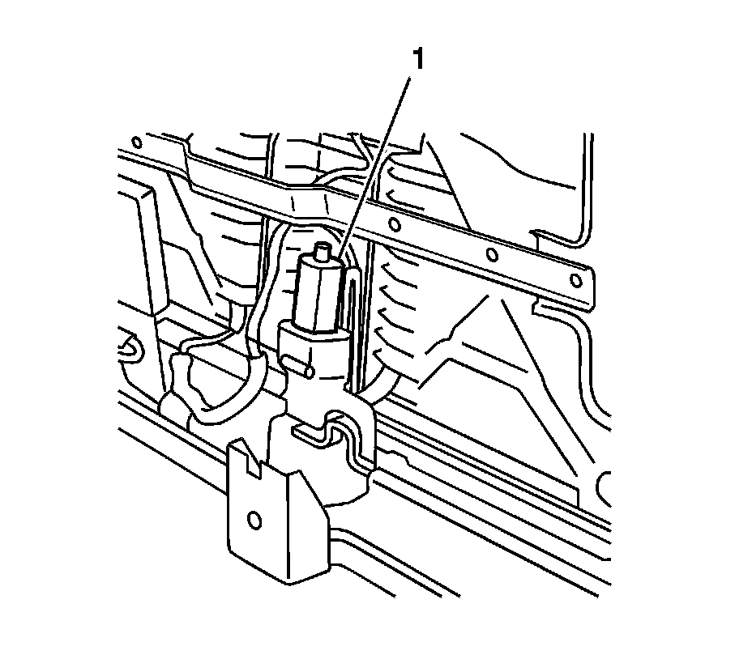

Rear Seat Number 2 Belt Buckle Replacement
Rear Seat Number 2 Belt Buckle Replacement
Removal Procedure
1. Remove the rear seat. Refer to Rear Number 2 Folding Seat Replacement (Rear Number 2 Folding Seat Replacement) .
2. Lay the seat with the seat back down.

3. Remove the seat belt buckle nut which is located under the seat motor (1) on the seat frame.
4. Remove the seat buckle.
Installation Procedure
1. Install the seat belt buckle to the seat frame.
Notice: Refer to Fastener Notice (Fastener Notice) .
2. Install the seat belt buckle nut.
Tighten the seat belt buckle nut to 42 N.m (31 lb ft).
3. Install the rear seat. Refer to Rear Number 2 Folding Seat Replacement (Rear Number 2 Folding Seat Replacement) .